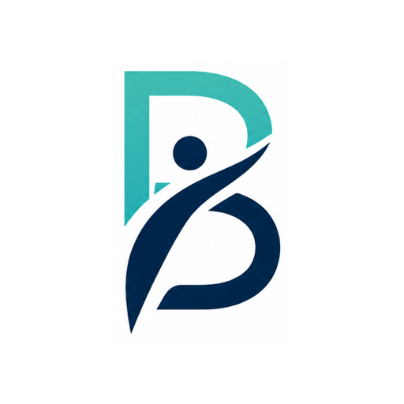
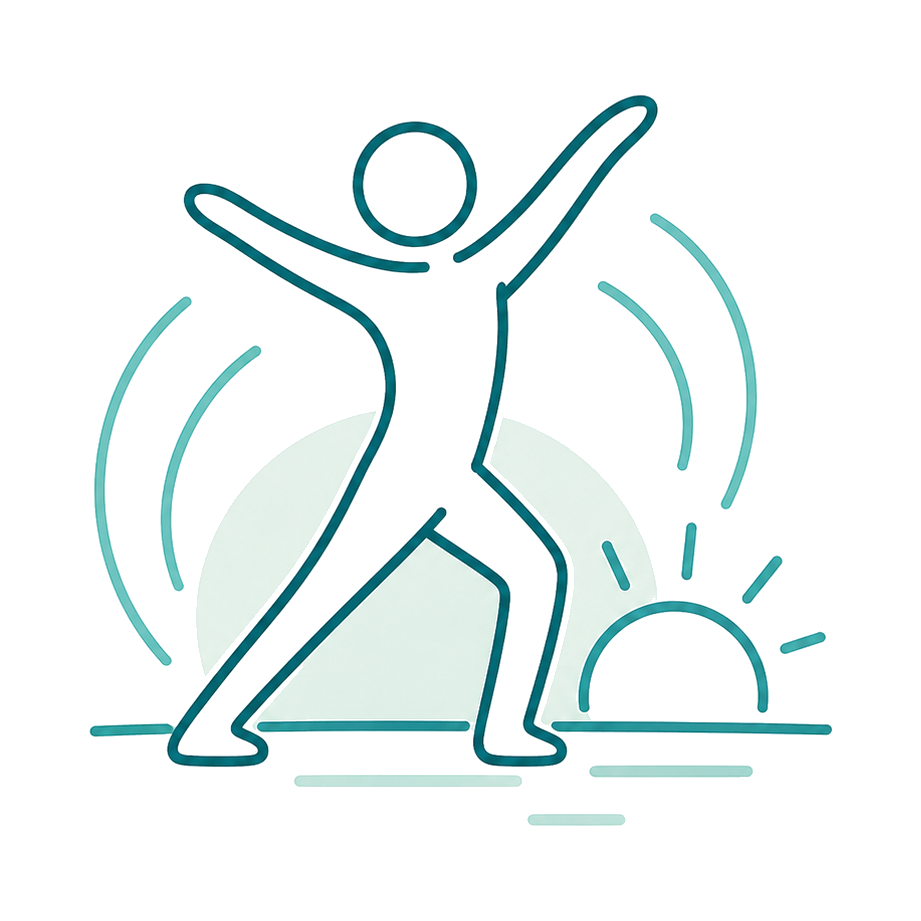

Choose your focus
Explore routines for mobility, balance, flexibility, or strength, and keep your favourites close at hand.

Back to Better
By ThinkSync StudioCalm, guided exercise routines for mobility, balance, flexibility, and strength. Choose a routine, press Start, and follow along at your own pace.

Move
Designed with older adults in mind, Back to Better makes it easier to follow a familiar routine, choose the guidance you prefer, and keep track of your practice.
Explore routines for mobility, balance, flexibility, or strength, and keep your favourites close at hand.
Spoken cues, timed holds, rep counts, and rest periods guide you through the routine. Choose guided, quiet, or silent sessions.
Review completed sessions, set personal goals, and use your feedback to choose a suitable session level next time.
Thoughtfully made
Keep the guidance you find helpful. Adjust a routine to your preferences, leave a note after a session, and return to your familiar starting point when you are ready.
Questions about routines, guidance, or getting started? We’re here to help.
Contact the studio